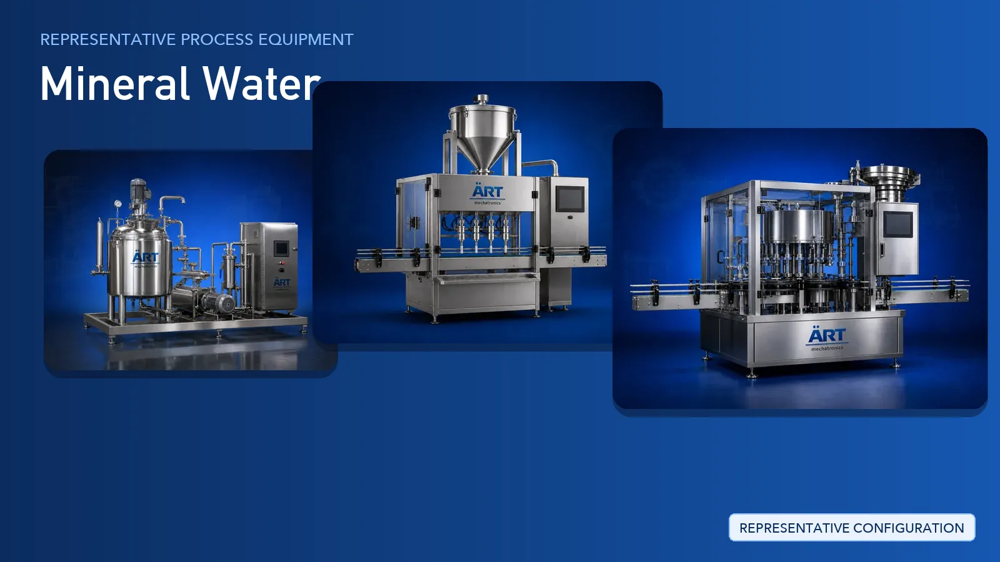

Mineral Water Plant & Machinery Solutions (Packaged Drinking Water Bottling & Pouch Lines)
Packaged drinking water, commonly sold as mineral water, is one of the largest packaged beverage categories worldwide and is supplied in bottles, jars, cans and pouches for retail, institutional and export use.

About Mineral Water processing
ART Mechatronics provides complete turnkey solutions for packaged drinking water plants, integrating treated-water storage with rinsing, filling, capping, labelling, coding, inspection and secondary packing lines built from our own machinery catalogue. Our solutions are designed for hygienic operation, automated production and dependable output across bottle, jar and pouch formats.
Complete Mineral Water Process Flow
Raw water is drawn from the source and held in dedicated storage before treatment.
Ensures steady, controlled feed to the treatment stage.
Raw water passes through staged treatment and filtration to remove suspended solids, hardness, odour and dissolved impurities.
Produces:
- Clear, odour-free water
- Consistent quality between batches
- Feed ready for disinfection
Treated water is disinfected and held in sanitised tanks so that microbial safety is maintained right up to filling.
Ensures product safety and compliance with drinking water norms.
Bottles, jars and cans are fed to the line and rinsed before filling.
Ensures clean, contamination-free containers.
Treated water is filled into the chosen container and sealed immediately.
Formats supported:
- Bottle Packing (Spray, Pet, Glass)
- Jar/ Jug Packing
- Gallon Packing
- Jerry Can Packing
- Pouch Filling and Pouch Sealing
Sealed packs are labelled, batch coded and inspected before secondary packing.
Ensures traceability and pack integrity.
Finished packs are collated, wrapped or cartoned and prepared for dispatch.
Suitable for retail, institutional and bulk distribution.
Plant-wide control:
- PLC Automation Control Panel
- Complete Packaging Automation
- Air Handling Unit for clean filling rooms
Machinery Required for Mineral Water Plant
Turnkey Mineral Water Plant Solutions
ART Mechatronics offers complete turnkey solutions for packaged drinking water plants, including:
- Process design & plant layout
- Treated-water storage and transfer systems
- Integration of water treatment and disinfection modules
- Rinsing, filling and capping line design
- Automation & control panels
- Labelling, coding and inspection integration
- Secondary packing and palletising
- Installation & commissioning
- After-sales support
We customize solutions based on:
- Raw water source and treatment requirement
- Production capacity
- Container type (bottle, jar, can, pouch)
- Automation level
- Clean-room and hygiene requirements
Why Choose ART Mechatronics for Mineral Water
- Expertise in liquid filling and beverage packing lines
- Hygienic food-grade machinery design
- Multi-format capability across bottles, jars and pouches
- Integrated inspection, coding and traceability
- Automated production with PLC-based control
- Single-point responsibility for the complete line
- Global export capability
Where it's used
Get pricing & specs for the Mineral Water plant
Share the product, target capacity, current process and plant location. These details help our engineers discuss the right machine or line configuration.
One partner, from design to start-up
ART Mechatronics designs, manufactures, installs and commissions your Mineral Water plant solution with regional presence in India, UAE and Thailand.